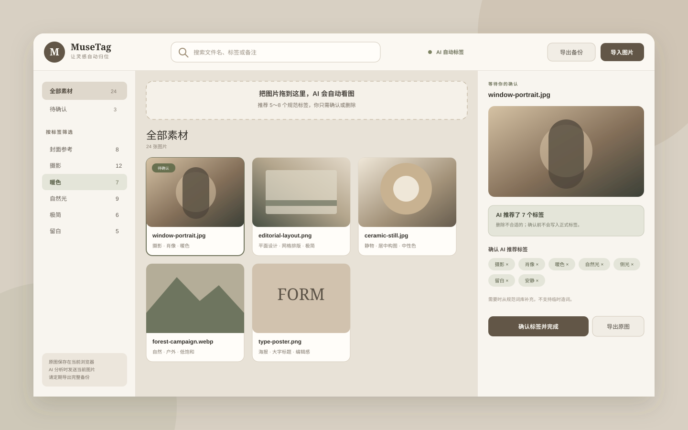

拖进来
支持 JPG、PNG、WebP 与多张导入。文件先写入浏览器本地数据库。
MuseTag 自动看图，从设计行业方法整理出的规范词库中推荐 5～8 个标签。没有自由造词，没有混乱的近义词。

原图先落库，AI 再异步分析。就算网络失败，素材也不会丢；确认前，建议也不会进入正式标签。
支持 JPG、PNG、WebP 与多张导入。文件先写入浏览器本地数据库。
每张推荐 5～8 个标签，结构化输出与程序双重限制，只能选择规范词。
点击删除不合适的，必要时从分组词库补选，一键确认完成。
借鉴 Getty AAT、Library of Congress TGM、IPTC 与 Adobe 的视觉编目方法，裁剪为个人创作者真正用得上的十个维度。
素材库保存在当前浏览器。只有进行 AI 分析时，当前图片才会发送到你配置的 OpenAI API。